Moje wspomnienia / retro komputer
Commodore.
To były piękne czasy...
To były piękne czasy...
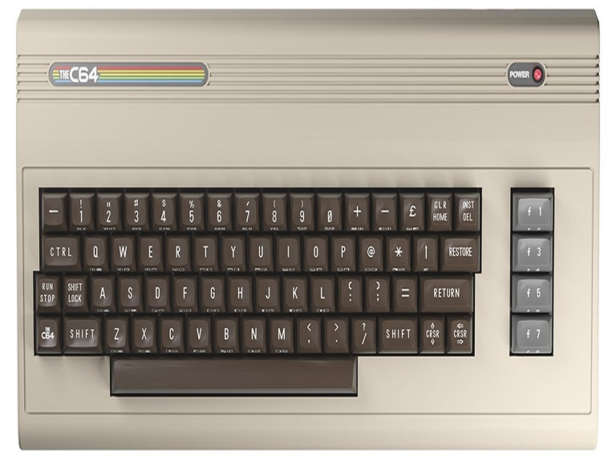
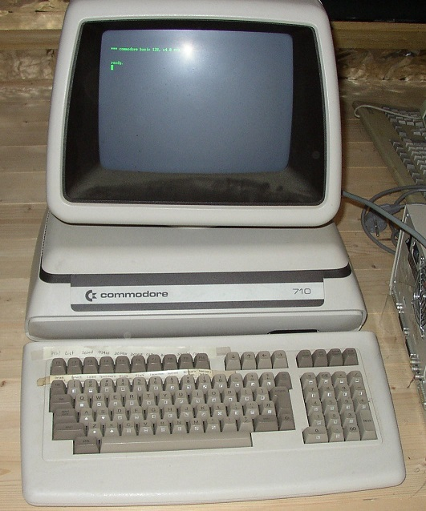
Gry Commodore
Kliknij miniaturkę, aby zobaczyć większy obraz.
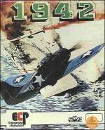
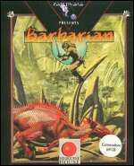
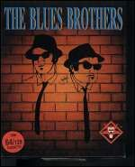
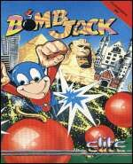
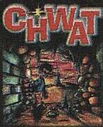
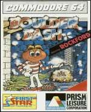
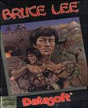
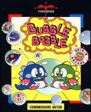
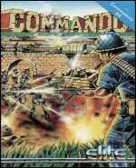
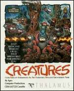
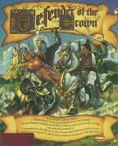
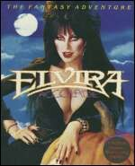
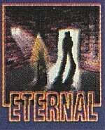
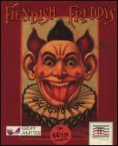
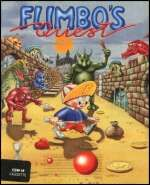
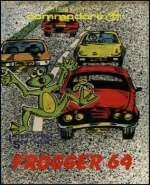
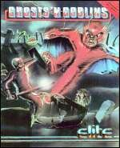
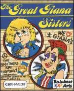
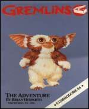
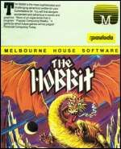
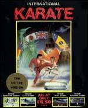
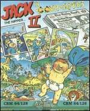
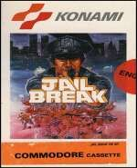
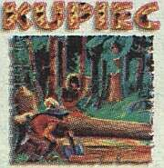
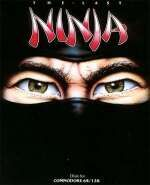
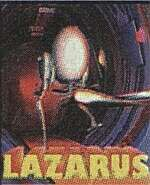
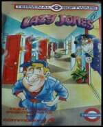
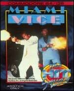
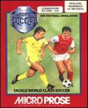
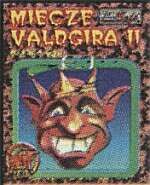
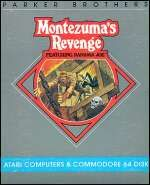
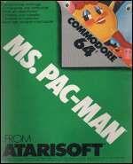
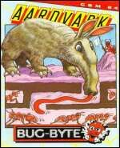
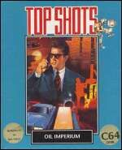
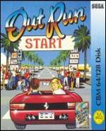
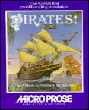
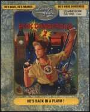
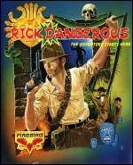
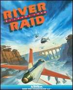
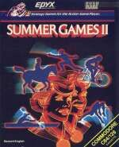
Niestety czasy te bezpowrotnie minęły. Dzisiejszym 50-latkom mogę jedynie polecić marną namiastkę, która tylko w niewielki sposób odzwierciedli tamte wspaniałe czasy. Kilkanaście emulatorów pod różne systemy operacyjne, na których można odpalić programy edukacyjne, demonstracyjne, narzędziowe, gry. Są tu również różnego rodzaju konwersje i muzyka.